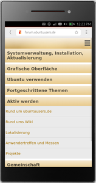
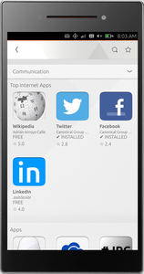
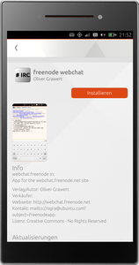
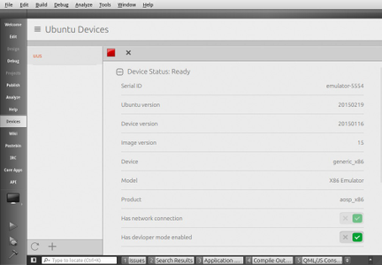

Emulator
Dieser Artikel wurde für die folgenden Ubuntu-Versionen getestet:
Ubuntu 14.04 Trusty Tahr
Zum Verständnis dieses Artikels sind folgende Seiten hilfreich:
Wer keine geeignete Hardware besitzt, kann das Smartphone-Betriebssystem Ubuntu Touch auch auf einem Desktop-PC oder Notebook ausprobieren. Interessant ist der Ubuntu-Touch-Emulator sowohl für Entwickler als auch für Nutzer. Der Emulator basiert auf dem Android-Emulator von Google. Einige Dinge funktionieren noch nicht, aber die wichtigsten Funktionen sind bereits implementiert - wie z.B. die Android Debug Bridge  . Diese erlaubt den Zugriff auf das zugrunde liegende System. Die Installation von Programmen aus dem Ubuntu Store ist möglich.
. Diese erlaubt den Zugriff auf das zugrunde liegende System. Die Installation von Programmen aus dem Ubuntu Store ist möglich.
Der Emulator läuft sehr langsam, ermöglicht aber ein Testen der Umgebung. Tastatureingaben können derzeit nur über die Ubuntu-Touch-Bildschirmtastatur erfolgen.
|  |
| Webbrowser |
|  |
| Ubuntu Store |
|  |
| Anwendung |
|  |
| Qt Creator |
Installation¶
Der Emulator ist nicht in den offiziellen Paketquellen zu finden - jedoch wird ein "Personal Package Archive" (PPA) [2] zur Installation angeboten.
PPA¶
Adresszeile zum Hinzufügen des PPAs:
ppa:phablet-team/tools
Hinweis!
Zusätzliche Fremdquellen können das System gefährden.
Ein PPA unterstützt nicht zwangsläufig alle Ubuntu-Versionen. Weitere Informationen sind der  PPA-Beschreibung des Eigentümers/Teams phablet-team zu entnehmen.
PPA-Beschreibung des Eigentümers/Teams phablet-team zu entnehmen.
Damit Pakete aus dem PPA genutzt werden können, müssen die Paketquellen neu eingelesen werden.
Nach dem Aktualisieren der Paketquellen muss folgendes Paket installiert [1] werden:
ubuntu-emulator (ppa)
 mit apturl
mit apturl
Paketliste zum Kopieren:
sudo apt-get install ubuntu-emulator
sudo aptitude install ubuntu-emulator
Verwendung¶
Abbilder (Images) des Betriebssystems werden unter ~/.cache/ubuntuimage gespeichert und Instanzen unter ~/.local/share/ubuntu-emulator. Informationen zu aktuellen Quellen findet man unter ubuntu.com oder kann diese dem folgenden Link entnehmen.
Mittels create kann eine Instanz erstellt werden [3][4]:
ARM¶
sudo ubuntu-emulator create ubuntuusers --arch=armhf --channel=ubuntu-touch/stable ##channel ggf. anpassen auf z.B. ubuntu-touch/devel-proposed
i386¶
sudo ubuntu-emulator create ubuntuusers --arch=i386 --channel=ubuntu-touch/stable ##channel ggf. anpassen auf z.B. ubuntu-touch/devel-proposed
Der Channel stable beinhaltet die stabilen Versionen, mit welchen auch die Ubuntu Handys bespielt sind. Die Ausstattung unterscheidet sich bei den Modellen der Smartphones sowie im Emulator jedoch teilweise durch eigene Anpassungen wie etwa der Verfügbarkeit von Scopes. Der Channel devel-proposed beinhaltet schneller Neuerungen, ist jedoch experimenteller. Der aktuellste experimentelle Channel ist derzeit vivid-proposed und bietet deutlich mehr Pakete als die beiden erstgenannten. Der Ubuntu Store für Apps lässt sich mit jedem Channel nutzen.
Hinweis:
Das Passwort für die Instanzen lautet in den Voreinstellungen 0000.
Parameter¶
Zusätzliche Parameter können bei Bedarf übergeben [3] werden:
| Parameter | |
| Optionen | Bedeutung |
| --scale=0.7 | Skaliert den Emulator um den angegebenen Wert - hier 0.7 |
| --memory=720 | Arbeitsspeichergröße - hier 720 MiB |
| --channel | Auswahl der Paketquelle. Es können Alternativen wie z.B. ubuntu-touch/stable verwendet werden. In der Grundeinstellung findet devel-proposed Verwendung. |
| --password=uus | Das Passwort der Instanz wird auf uus geändert |
| --revision | Bestimmte Revision verwenden |
| --use-raw-disk | Zur Verwendung mit Rawdisk. Siehe X86 Ubuntu Touch Emulator . |
| --help | Hilfe aufrufen |
Die Reihenfolge der Optionen spielt keine Rolle.
Start¶
Über ubuntu-emulator run ubuntuusers kann die Instanz ubuntuusers gestartet [3][5] werden. Mitunter sind erweiterte Rechte [4] erforderlich. Alternativ kann hier auch Qt Creator Verwendung finden.
Hinweis:
Der erste Start dauert etwas länger, da unter anderem SSH-Keys erzeugt werden.
| Startparameter | |
| Befehl | Bedeutung |
| sudo ubuntu-emulator destroy ubuntuusers | Zerstört die Instanz ubuntuusers |
ubuntu-emulator list | Listet alle verfügbaren Instanzen auf |
| ubuntu-emulator snapshot --create=SNAPSHOT1 ubuntuusers | Nimmt eine Momentaufnahme der Instanz ubuntuusers auf |
| ubuntu-emulator snapshot --revert=SNAPSHOT1 ubuntuusers | Wiederherstellung des Snapshots ubuntuusers |
| --revert-pristine | Wiederherstellung des ersten Snapshots |
| --help | Hilfe aufrufen |
Zugriff¶
Es gibt zwei Möglichkeiten, um auf eine Instanz zuzugreifen:
Tastenkürzel¶
| Tastenkürzel | |
| Taste(n) | Funktion |
| F7 | Einschaltknopf |
| Strg + F5 / Strg + F6 | Lautstärke |
| Strg + F11 / Strg + F12 | Ansicht ändern |
Problembehebung¶
libGL error: Couldn't dlopen libudev.so.1.x¶
Auf 64-bit-Systemen kann es zu dieser Fehlermeldung kommen. Abhilfe schafft die Installation [1] des folgenden Pakets:
libudev1:i386
mit apturl
Paketliste zum Kopieren:
sudo apt-get install libudev1:i386
sudo aptitude install libudev1:i386
Authentication token manipulation error¶
Erscheint die Fehlermeldung Authentication token manipulation error so muss man das Passwort bei der Erstellung einer Instanz zusätzlich übergeben:
--password=1234
Links¶
Ubuntu Touch
 Übersichtsartikel
ÜbersichtsartikelTerminal - das schnellste, mächtigste sowie flexibelste Programm im Emulator
Geschichte von Ubuntu Touch - Zeitreise im Emulator
Ubuntu Touch Emulator: Installation And Usage In Ubuntu 14.04, 13.10 And 12.04
- Erstellt mit Inyoka
-
 2004 – 2017 ubuntuusers.de • Einige Rechte vorbehalten
2004 – 2017 ubuntuusers.de • Einige Rechte vorbehalten
Lizenz • Kontakt • Datenschutz • Impressum • Serverstatus -
Serverhousing gespendet von